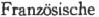
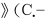
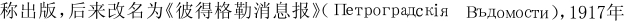
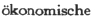

报刊索引
B
《巴黎革命。献给全国及佩蒂·奥古斯坦区》（Révolutions de Paris，dédiées à la Nation et au district des Petits Augustins）——法国的一家周报，1789年7月12日—1794年2月28日由路·玛·普律多姆在巴黎出版，1790年以前主编是埃·路斯达洛。——851。
《贝里卫报》（The Burry Guardian）——英国的一家日报，1857年在兰开夏郡贝里创办。——309。
C
《晨报》（The Morning Advertiser）——英国的一家日报，1794—1936年在伦敦出版；19世纪50年代是激进资产阶级的报纸。——41。
《晨星报》（The Morning Star）——英国的一家日报，自由贸易派的机关报，1856—1869年在伦敦出版；报纸还出版定期晚刊《晚星报》（Evening Star）。——41、296、619、751。
D
《德法年鉴》（Deutsch-Jahrbücher）——在巴黎出版的德文刊物，编辑是阿·卢格和马克思；仅仅在1844年2月出版过第1、2期合刊；其中刊登了马克思和恩格斯的在理论上完成了向唯物主义和共产主义彻底过渡的重要著作；杂志停刊的主要原因是马克思和卢格之间存在着原则上的意见分歧。——92、177、191。
G
《格拉斯哥每日邮报》（The Glasgow Daily Mail）。——360。
《工人辩护士报》（The Workman’s Advocate）——英国的工人报纸，1865年9月—1866年2月在伦敦出版，每周一期。报纸最初的名称为《不列颠矿工和新闻记者总汇报》（British Miner and General newsman），于1862年9月13日创刊，1863年3月7日改名为《矿工报》（Miner），1863年6月13日又改名为《矿工和工人辩护士报》（The Miner and workman’s Advocate），编辑为约·托尔斯（1862年9月13日—1865年8月5日）和约·贝·莱诺（1865年8月），1865年7月底报纸为莱诺所有，他把报纸交给国际总委员会掌握，9月8日起改名为《工人辩护士报》，编辑为莱诺（1865年9月—1866年1月）和约· 格·埃卡留斯（1866年1—2月），从1865年9月25日起成为国际的正式机关报，1865年11月起报纸归工业报股份公司所有。马克思是工业报股份公司理事会理事（1865年8月22日—1866年6月9日）。报纸维护工人阶级的利益，刊登关于总委员会会议的报道和国际的文件。1866年2月，由于编辑部内改良主义分子的势力增强，报纸再度进行改组，并更名为《共和国》（The Commonwealth）。——292。
《公文集。公文汇编》（The Portfolio，or a Collection of State Papers）——英国的一家丛刊，简称《公文集》（Portfolio），主要刊登外交公文和现代史方面的材料，1835—1837年由乌尔卡尔特在伦敦出版；1843—1845年以《公文集。外交评论》（The Portfolio.Diplomatic Review）的名称出版；1859—1860年在柏林出版德文版，德文名称是《新公文集。当代重要文件及材料汇编》（Das Neue Portfolio.Eine Sammlung wichtiger Dokumente und Aktenstücke zu Zeitgeschichte），德文版主编是费舍。——840。
《观察家报》（The Observer）——英国的一家保守派周报，英国最老的一家星期日刊；1791年起在伦敦创刊。——163。
J
《纪事晨报》（The Morning Chronicle）——英国的一家日报，1770—1862年在伦敦出版；40年代为辉格党的机关报，50年代为皮尔派的机关报，后为保守党的机关报。——778。
《技艺协会和联合会机关杂志》（The Journal of the Society of Arts，and of the Institutions in Union）——英国的一家技艺和古代文化研究周报，1852年在伦敦创办。——479。
《今日》（To-day）——英国的一家社会主义月刊，1883年4月—1889年6月在伦敦出版；1884年7月—1886年的编辑是亨·迈·海德门。——43。
《经济学家。每周商业时报，银行家的报纸，铁路监控：政治文学总汇报》（The Economist.Weekly Commercial Times，Bankers’Gazette，and Railway Monitor：a political，literary，and general newspaper）——英国的一家周刊，1843年由詹·威尔逊在伦敦创办，大工业资产阶级的喉舌。——265、678、735、778、842。
L
《雷诺新闻。政治、历史、文学和一般知识周报》（Reynolds’s Newspaper.A Weekly Journal of Politics，History，Literature，and General Intelligence）——英国的一家工人周报，1850年8月由接近宪章派的小资产阶级民主主义者乔· 威·麦·雷诺在伦敦创刊，原名《雷诺新闻周报》（Reynolds’s Weekly Newspaper）；1871年报纸维护巴黎公社的利益，后来成为合作社运动的刊物。——293、294、770。
M
《麦克米伦杂志》（Macmillan’s Magazine）——英国的一家资产阶级自由派刊物，1859年由达·马松创办，1859—1907年在伦敦出版。——296。
《每日电讯》（The Daily Telegraph）——英国的一家日报，1855—1937年在伦敦出版；起初为资产阶级自由派报纸，后来从19世纪80年代起是保守派报纸；1937年同《晨邮报》（Morning Post）合并以后改名为《每日电讯和晨邮报》（Daily Telegraph and Morning Post）。——283。
《孟加拉公报。大陆新闻摘要双月刊》（The Bengal Hurkaru.Overland summary of news）——印度的一家日报，1795—1866年在加尔各答出版。——381。
《民主周报》（Demokratisches Wochenblatt）——德国的工人报纸，德国人民党的机关报，1868年1月4日—1869年9月29日在莱比锡出版，1869年8月28日起每周出两次，由威·李卜克内西主编；1868年12月5日起同时为奥·倍倍尔领导的德国工人协会联合会的机关报。周报最初受人民党小资产阶级思想的一定影响，但很快由于马克思和恩格斯的努力，开始与拉萨尔主义进行斗争，宣传国际的思想，刊登国际的重要文件以及马克思和恩格斯的一些文章，在德国社会民主工党的创建中起重要作用。1869年8月起成为德国社会民主工党中央机关报，并于10月改名为《人民国家报》（D e r Volksstaat）。——18。
N
《纽约每日论坛报》（New-York Daily Tribune）——美国的一家日报，由霍·格里利和托·麦克尔拉思等创办，1841年4月10日—1924年在纽约出版；50年代中期以前是美国辉格党左翼的机关报，后来是共和党的机关报；40—50年代站在进步的立场上坚决反对奴隶占有制；1851年8月—1862年3月马克思和恩格斯为报纸撰稿；美国内战开始后，报纸日益离开进步立场，马克思和恩格斯遂停止撰稿并与报纸断绝关系。除日报外，还出每周版《纽约每周论坛报》（New-York Weekly Tribune）（1841年9月起）和半周版《半周论坛报》（Semi-Weekly Tribune）（不迟于1845年），1853年5月起《半周论坛报》改名为《纽约半周论坛报》（New-York Semi-Weekly Tribune）。——839。
O
《欧洲通报。历史、政治和文学杂志》（В ъ с т н и к ъЕ в р о п ы . Ж у р н а л ъи с т о р i и，п о л и т и к и ，л и т е р а т у р ы ） —— 俄国一家资产阶级自由派月刊，1866—1908年由创办人米·马·斯塔修列维奇在圣彼得堡编辑出版；1909—1918年夏由马·马·柯瓦列夫斯基编辑；19世纪90年代初期，经常刊登一些反马克思主义的文章。——20。
P
《派尔-麦尔新闻。晚报和评论》（The Pall Mall Gazette.An Evening Newspaper and Review）——英国的一家保守派日报；1865年2月—1920年在伦敦出版，每日一次，为晚刊；编辑为弗·格林伍德（1865—1880）、威·托·斯特德（1883—1889）；1870年7月—1871年6月马克思和恩格斯同报纸有联系，在此期间报纸刊登了国际工人协会总委员会关于普法战争的第一篇宣言和第二篇宣言（摘要）和恩格斯的关于普法战争的一组文章《战争短评》，以前还刊登过有关国际的代表大会的报道；巴黎公社失败后，鉴于报纸对公社的攻击日益增多，马克思和恩格斯遂停止撰稿并与报纸断绝关系。——753。
《旁观者》（The Spectator）——英国的一家自由派周刊，1828年起在伦敦出版，后来成为保守派刊物。——385。
Q
《旗帜报》（The Standard）——英国的一家保守派日报，1827—约1917年在伦敦出版，1857—1905年曾出版晚刊《旗帜晚报》（The Evening Standard），1905年起将晚刊更名为《旗帜晚报和时代新闻》（Evening Standard and Times Gazette）。——34、296、642、772。
R
《人民国家报》（Der Volksstaat）——德国的一家报纸，1869年10月2日—1876年9月29日在莱比锡出版，起初每周出两次，1873年7月起每周出三次；创刊时的副标题是《社会民主工党和工会联合会机关报》（Organ der sozialdemokratischen Arbeiterpartei und der Gewerksgenossenschaften），1870年7月2日起改名为《社会民主工党和国际工会联合会机关报》（Organ der sozialdemokratischen Arbeiterpartei und der internationalen Gewerksgenossenschaften），1875年6月11日起又改名为《德国社会主义工人党机关报》（Organ der Sozialistischen Arbeiterpartei Deutschlands）；报纸编辑部领导人是威·李卜克内西，出版社社长是奥·倍倍尔；报纸反映了德国工人运动中革命派的观点；马克思和恩格斯从报纸创刊之日起就为之撰稿；他们认为报纸的活动具有重大意义，并密切注视它的工作，及时批评它的疏忽和某些错误，纠正它的路线，使它成为19世纪70年代最优秀的工人报纸之一。——18、38。
S
《社会科学评论》（The Social Science Review）——在伦敦出版。——295、297。《圣彼得堡消息报。政治和文学报П е т е р б у р г с к i я В ъ д о м о с т и . Г а з е т а п о л и т и ч е с к а яи л и т е р а т у р н а я）——俄国的一家日报，1728—1914年用这个名停刊；19世纪50年代每周出两次，由科学院出版，1875年起由国民教育部出版。——19。
《实证哲学。评论》（La Philosophie Positive.Revue）——法国的一家哲学杂志，1867年7月1日—1883年由埃·利特雷和格·尼·威卢博夫在巴黎出版。——19。
T
《泰晤士报》（The Times）——英国的资产阶级报纸，保守党的机关报，1785年1月1日在伦敦创刊，报名为《环球纪事日报》（Daily Universal Register），1788年1月1日起改名为《泰晤士报》，每日出版。创办人和主要所有人为约·瓦尔特，1812年起主要所有人为约·瓦尔特第二，约·瓦尔特第三继其后为主要所有人。19世纪先后任主编的有托·巴恩斯（1817—1841）、约·塔·德莱恩（1841—1877）、托·切纳里（1877—1884）、乔·厄·巴克尔（1884—1912），助理编辑乔·韦·达森特（1845—1870）等，50—60年代的撰稿人有罗·娄、亨·里夫、兰邦等人。莫·莫里斯为财务和政务经理（40年代末起），威·弗·奥·德莱恩为财务经理之一（1858年前）；报纸与政府人士、教会和垄断组织关系密切，是专业性和营业性的报纸；1866—1873年间曾报道国际的活动和刊登国际的文件。——38、41—43、240、296、311、341、465、543、575、664、665、693、751、753、817、841。
W
《晚星报》（Evening Star）。——见《晨星报》。
《威斯敏斯特评论》（The Westminster Review）——英国的一家政治、国民经济、宗教和文学的自由派刊物，1824年由耶·边沁和约·包令在伦敦创办，1824—1887年为季刊，1887—1914年为月刊；后由詹·穆勒和约·斯·穆勒主持。——79。
X
《协和。工人问题杂志》（Concordia.Zeitschrift für die Arbeiterfrage）——德国的一家杂志，1871—1876年在柏林出版。——37—38、41、42。
《新莱茵报。民主派机关报》（Neue Rheinische Zeitung.Organ der Demokratie）——无产阶级第一家独立的日报，1848年6月1日—1849年5月19日在科隆出版；主编是马克思，编辑是恩格斯、威·沃尔弗、斐·沃尔弗、格·维尔特、恩·德朗克、斐·弗莱里格拉特等；报纸作为无产阶级的领导核心，实际完成了共产主义者同盟中央委员会的任务；1848年9月26日科隆实行戒严，报纸暂时停刊；此后在经济和组织方面遇到了巨大困难，马克思不得不在经济上对报纸的出版负责，为此他把自己的全部现金贡献出来，报纸终于获得了新生；1849年5月马克思和其他编辑被驱逐或遭迫害，报纸被迫停刊。——667、878。
《新莱茵报。政治经济评论》（Neue Rheinische Zeitung.Politisch-Revue）——马克思和恩格斯创办的杂志，共产主义者同盟的理论刊物；1850年1—10月在伦敦编辑，在汉堡和纽约印刷，共出6期。——337、349。
Z
《政治、文学、科学和技艺星期六评论》（The Saturday Review of Politics，Literature，Science，and Art）——英国的一家保守派周刊，1855—1938年在伦敦出版。——19。